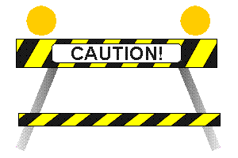
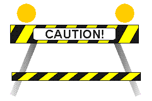
 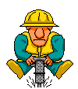
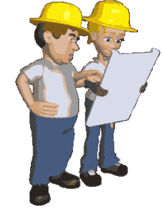
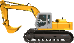
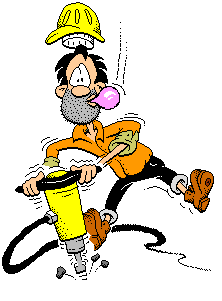
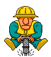
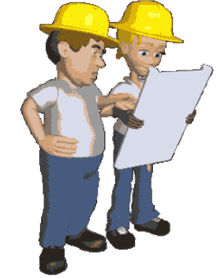
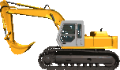
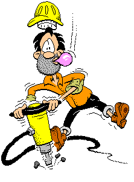

 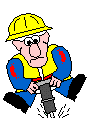
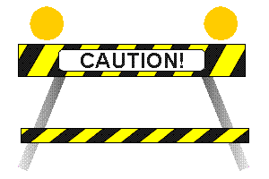
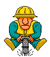
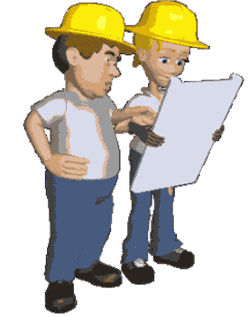
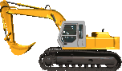
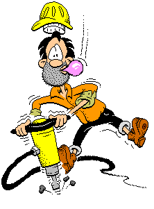
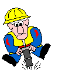
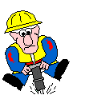
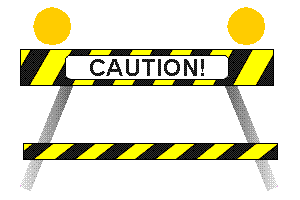
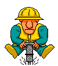
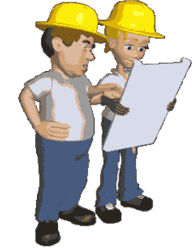
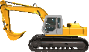
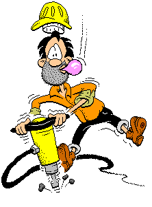
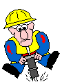

information is an activity, not a noun [...] As in an oral tradition, digitized information has no "final cut" — John Perry Barlow
an excerpt from Olia Lialina's essay A Vernacular Web:
The "Under Construction Sign" is a very strong symbol of the early web. It reminds us of the great times shortly after the scientists and engineers finished their work on the Information Highway. Ordinary people came with their tools and used the chance to build their own roads and junctions. Work was everywhere and everywhere there was something that wasn't ready, links were leading to nowhere or to pages that didn't quite exist and there were signs on the pages that warned of broken connections and the lack of navigation.
Step by step people were developing pages into a functioning web and it became less necessary to warn us, especially using road signs, about missing information. But they didn't disappear. Instead, "Under Construction" images changed their meaning from a warning to a promise that this page will grow. The symbol became a hybrid of excuse and invitation. It could appear on an empty or properly functional site as a sign that the project was growing and being updated. Often you could see the newer sign, "Always Under Construction."
"Always Under Construction" didn't mean the site would never work but actually the opposite. It informed users that there was somebody who was always taking care of the site so it would be interesting to return again and again.
This was a very important message because it was crucial to really insist on the idea of constant development and change but the sign was wrong. The association with broken roads and obstacles on the way didn't illustrate the idea of ongoing development. Around 1997 the sign turned into a meaningless footer and became a common joke. Even the mainstream press wrote that the web was always under construction so, after a while, people stopped putting it everywhere.
A new media object is not something fixed once and for all, but something that can exist in different, potentially infinite versions. — Lev Manovich The Language of New Media